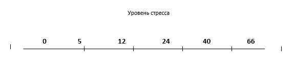
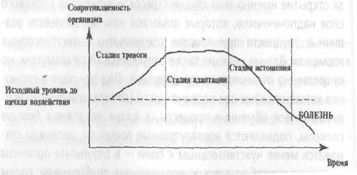

Творческое объединение
"Открытый университет"
Структура университета
Творческая мастерская "Палитра жизни"
Творческая мастерская практикующих психологов, клуб интервизии и супервизии
профессионального мастерства
https://vk.com/club146006182
Студия "Палитра жизни" - это уникальное пространство для жизненного и профессионального самоопределения взрослых, дополнительного образования и формирования полезных компетенций в разных сферах жизни, профессионального и личностного развития.
Наша целевая группа - разные категории взрослого населения гродненского региона от 18 лет и старше: женщины и мужчины, семейные пары и люди, находящиеся в поиске своего партнера и потенциального спутника жизни; работники государственного сектора, частных предприятий региона, а также лица, находящиеся в поиске работы и профессиональной самореализации.
Формы и методы работы: программа обучения и развития взрослых – это полноценный цикл тематических семинаров-практикумов по имиджу и харизме, тренингов ораторского мастерства и коммуникативной культуры личности, групп личностного роста, школы медиации и практической конфликтологии, школы эффективного родительства, творческих мастерских для девушек и женщин, арт-студии гармоничного эмоционального развития, психологические гостиные, раскрывающие секреты эффективных партнерских и супружеских отношений, сексологические консультации по психологии и гигиене половой жизни взрослого человека на разных возрастнх этапах и этапах развития пары.
ТЕМЫ НА 2017 год
Уникальная авторская программа «Психологические Закрома: здоровье, молодость и красота». Целевая группа – женщины, которые хотят сохранить и оптимизировать здоровье своё и близких. В программе предусмотрено обучение системным энергетическим практикам, которые позволяют восстанавливать и сохранять энергетический баланс сил в организме.
Арт-терапевтическая группа «Эскизы Счастья!»: авторская программа, построенная на технологиях терапии искусством. Данная программа направлена на моделирование участниками своего уникального образа счастья. Каждый человек приходит в наш мир для радости, здоровья, красоты, любви, счастья, самореализации своих многочисленных талантов, актуализации своего уникального предназначения. Участие в программе позволит осознать некоторые компоненты своего жизненного предназначения и обозначить вектора самореализации.
Расстановочные практики «Зазеркалье моего Я»: программа построена на расстановочных практиках семейной системной психотерапии. Данная программа направлена на моделирование целостного образа своего многогранного Я.
Терапевтическая группа «Мозаика гармоничного брака»: программа, построенная на технологиях семейной терапии. Данная программа предназначена для семейных пар. Цель – раскрыть потенциал семейного благополучия и содействовать его актуализации.
Студия «Палитра Жизни» - это система групповых встреч. Основные модули первого цикла:
Модуль 1. Интегрированная группа «Секреты Счастливой Судьбы!»:
программа, направленная на анализ жизненных событий и создания для каждого участника группы идеальной футуристической программы счастливого жизненного пути. Методы работы: технологии самопознания и рефлексии «Я – среди людей» и «Мои главные качества», технологии медиации как искусства управления негативными контактами в окружении, проективные методы, метафорические ассоциативные карты, арт-технологии «Полотно Жизни» и «Карта Судьбы».
Занятие 1. Тема «Жизнь Человека как совокупность событий».
Занятие 2. Тема «Правда и мифы о счастье».
Занятие 3. Тема «Моделирование счастливого жизненного пути».
Ведущая: Ольга Венско, заместитель председателя правления Гродненского областного общественного объединения практических психологов (ГОООПП), Действительный член Общероссийской профессиональной психотерапевтической лиги (Москва), системный семейный психотерапевт, кризисный психолог, травмотерапевт, арт-терапевт, мастер метафорической психотерапии.
Модуль 2. Творческая мастерская для женщин «Окрылённая Любовью!»:
самая востребованная авторская программа, построенная на самых эффективных имиджелогических технологиях, техниках метафорической психотерапии, арт-терапии, мандала-терапии, расстановочных практиках («Живое поле», «Птица», «Сила Рода»), направленных на формирование позитивного самосознания женщин.
Занятие 1. Тема «Энергия Любви: расстановочные практики для самоанализа феноменов «любовь» и «нелюбовь», «принятие» и «отверженность» в жизни человека». Ведущая: Оксана Шульга, к.психол.н., доцент, председатель правления ГОООПП, семейный системный психотерапевт, расстановщик.
Занятие 2. Тема «САМОРЕАЛИЗАЦИЯ ПО-ЖЕНСКИ»: ключевые принципы успешности современной женщины; стратегии реализации самых известных женщин 20 века; синтез западных и восточных технологий развития женской энергии; секрет женской силы. Ведущая: Ольга Венско, заместитель председателя правления Гродненского областного общественного объединения практических психологов (ГОООПП), Действительный член Общероссийской профессиональной психотерапевтической лиги (Москва), системный семейный психотерапевт, кризисный психолог, травмотерапевт, арт-терапевт, мастер метафорической психотерапии.
Занятие 3. Тема «Я – самая обаятельная и привлекательная!»: секреты молодости и красоты от стилиста, женского доктора, семейного психолога, имиджмейкера, косметолога. Ведущая: Ольга Венско, заместитель председателя правления Гродненского областного общественного объединения практических психологов (ГОООПП), Действительный член Общероссийской профессиональной психотерапевтической лиги (Москва), системный семейный психотерапевт, кризисный психолог, травмотерапевт, арт-терапевт, мастер метафорической психотерапии.
Занятие 4. Тема «Жемчуга Клеопатры или секреты соблазна»: технологии прикладной сексологии. Ведущая: Ольга Венско, системный семейный психотерапевт.
Авторская мастерская «Многоликая Я: Женщина, Подруга, Жена, Хозяйка, Мама, Профессионал, Леди-босс».
Авторская мастерская «Хозяин Жизни: технологии успешного имиджа современного мужчины».
Специальное предложение: двухдневный семинар-практикум «Психотерапия сексуальных расстройств в контексте системной психотерапии».
Модуль 3. Творческая мастерская для мужчин «И царь, и бог…»:
новая авторская программа для мужчин, направленная на формирование успешной модели образа современного мужчины. Специальные гости – врач-сексолог, врач-андролог, стилист-имиджмейкер, фитнес-тренер, финансовый коуч, гендерный и семейный психолог, системный психотерапевт.
Занятие 1. Тема «Правда и мифы о брутальности и сексуальности мужчин».
Занятие 2. Тема «Моделирование эффективного образа Мужчины и стиля жизни».
Модуль 4. Уникальная авторская программа «Психологические Закрома:
здоровье, молодость и красота». Целевая группа – женщины, которые хотят сохранить и оптимизировать здоровье своё и близких. В программе предусмотрено обучение системным энергетическим практикам, которые позволяют восстанавливать и сохранять энергетический баланс сил в организме.
Модуль 5. Арт-терапевтическая группа «Эскизы Счастья!»:
авторская программа, построенная на технологиях терапии искусством. Данная программа направлена на моделирование участниками своего уникального образа счастья. Каждый человек приходит в наш мир для радости, здоровья, красоты, любви, счастья, самореализации своих многочисленных талантов, актуализации своего уникального предназначения. Участие в программе позволит осознать некоторые компоненты своего жизненного предназначения и обозначить вектора самореализации.
Модуль 6. Расстановочные практики «Зазеркалье моего Я»:
программа построена на расстановочных практиках семейной системной психотерапии. Данная программа направлена на моделирование целостного образа своего многогранного Я.
Модуль 7. Терапевтическая группа «Мозаика гармоничного брака»:
программа, построенная на технологиях семейной терапии. Данная программа предназначена для семейных пар. Цель – раскрыть потенциал семейного благополучия и содействовать его актуализации.
Наши компетенции - для Вашего развития и успеха! Мы открыты для творческого взаимодействия и готовы щедро делиться с Вами нашими знаниями!
АВТОРЫ И ВЕДУЩИЕ ОБРАЗОВАТЕЛЬНЫХ ПРОГРАММ:
ВЕНСКО Ольга Иосифовна, магистр психологических наук, ученый-исследователь в области инженерной психологии, психологии труда и эргономики, старший преподаватель кафедры возрастной и педагогической психологии Гродненского государственного университета имени Янки Купалы, модератор психологических событий в Гродно и регионе, председатель экспертной комиссии сертифицированных программ и заместитель председателя правления Гродненского областного общественного объединения практических психологов (ГОООПП), Действительный член Общероссийской профессиональной психотерапевтической лиги (Москва), региональный менеджер программ Тренингового центра «Сталкер» (Витебск), системный семейный психотерапевт, кризисный психолог, травмотерапевт, арт-терапевт, мастер метафорической психотерапии.
Контактные линии:
Контактный телефон: +375 29 2857057
E-mail: PlanetaSchastia@mail.ru
E-mail: Venska-life@mail.ru
www.psycholog.p.ht/index.php.
SKYPE: VENSKA-PSY
SKYPE: Olga_Venska
Офис 1: 230025, г. Гродно, ул. К. Маркса, 29-412
Офис-2: 230025, г. Гродно, ул. Б. Троицкая, 46 (1 этаж)
ШУЛЬГА Оксана Константиновна, кандидат психологических наук, доцент, заведующий кафедры возрастной и педагогической психологии факультета психологии учреждения образования «Гродненский государственный университет имени Янки Купалы», председатель правления Гродненского областного общественного объединения практических психологов (ГОООПП), Действительный член Общероссийской профессиональной психотерапевтической лиги (ОППЛ), ведущий тренер Центра «Медиация и Право» (г. Гродно, Беларусь), конфликтолог, медиатор, автор республиканского проекта «Школьная медиация», семейный системный психотерапевт, расстановщик, гештальт-терапевт, психолингвист, исследователь в области международной профессиональной лексики.
Контактные линии:
Контактный телефон: +375 29 8678240
Офис 1: 230009, г. Гродно, БЛК-21, каб.35
Офис-2: 230025, г. Гродно, ул. Б. Троицкая, 46 (1 этаж)
Правила Рикка Брея
- Определите причину своей неприятности. Если эта
неприятность дана вам
Природой (болезни близких, несчастные случаи, ваши утраты). Дайте душе
отболеть положенный срок. Не бунтуйте и не спорьте с жизнью. Если эта
неприятность рождена недостатком других людей (глупостью, злобой,
завистью)
– не болейте чужими болезнями. Это не ваши стрессы, а проблемы других
людей.
- Не поддавайтесь тревоге, если неприятность ещё
не произошла. Живите в
настоящем, ибо будущее переменчиво, пока беда не произошла, глупо
страдать
раньше времени.
- Не преувеличивайте границы горя. Все
относительно, и то, что кажется
вам крушением мира, для иных людей – привычный стресс.
- Не затягивайте свое страдание. У каждого
страдания свои сроки.
Проявляйте терпение, ждите, и вы обретете радость преодоления.
- Воспринимайте свою жизнь как единственную и
неповторимую. Господь не
дал вам скучать, послав и радости, и испытания, и, только пережив горе и
счастье, вы научитесь достойно переносить первое и ценить второе.
Стресс и его разновидности
Ниже приводится список признаков стресса. Отметьте те симптомы, которые у вас проявляются наиболее часто.
| ИНТЕЛЛЕКТУАЛЬНЫЕ ПРИЗНАКИ СТРЕССА | ПОВЕДЕНЧЕСКИЕ ПРИЗНАКИ СТРЕССА | ||
|
1. Преобладание негативных мыслей 2. Трудность сосредоточения 3. Ухудшение показателей памяти 4. Постоянное и бесплодное вращение мыслей вокруг одной проблемы 5. Повышенная отвлекаемость 6. Трудность принятия решений. длительные колебания при выборе 7. Плохие сны, кошмары 8. Частые ошибки, сбои в вычислениях 9. Пассивность, желание переложить ответственность на кого-то другого 10. Нарушение логики, спутанное мышление 11. Импульсивность мышления, поспешные и необоснованные решения 12. Сужение поля зрения, кажущееся уменьшение возможных вариантов действия |
1. Потеря аппетита или переедание 2. Возрастание ошибок при выполнении привычных действий 3. Более быстрая или, наоборот, замедленная речь 4. Дрожание голоса 5. Увеличение конфликтных ситуаций на работе или в семье 6. Хроническая нехватка времени 7. Уменьшение времени, которое уделяется на общение с близкими и друзьями 8. Потеря внимания к своему внешнему виду, неухоженность 9. Антисоциальное поведение 10. Низкая продуктивность деятельности 11. Нарушение сна или бессонница 12. Более интенсивное курение и употребление алкоголя |
||
| Сумма баллов | Сумма баллов | ||
| ЭМОЦИОНАЛЬНЫЕ СИМПТОМЫ | ФИЗИОЛОГИЧЕСКИЕ СИМПТОМЫ | ||
|
1. Беспокойство, повышенная тревожность 2. Подозрительность 3. Мрачное настроение 4. Ощущение постоянной тоски, депрессия 5. Раздражительность, приступы гнева б. Эмоциональная «тупость», равнодушие 7. Циничный, неуместный юмор 8. Уменьшение чувства уверенности в себе 9. Уменьшение удовлетворенности жизнью 10. Чувство отчужденности, одиночества 11. Потеря интереса к жизни 12. Снижение самооценки, появление чувства вины или недовольства собой или своей работой |
|
1. Боли в разных частях тела неопределенного характера, головные боли 2. Повышение и понижение АД 3. Учащенный или неритмичный пульс 4. Нарушение процессов пищеварения 5. Нарушение свободы дыхания 6. Ощущение напряжения в мышцах 7. Повышенная утомляемость 8. Дрожь в руках, судороги 9. Проявление аллергии или иных кожных высыпаний 10. Повышенная потливость 11. Снижение иммунитета, частые недомогания 12. Быстрое увеличение или потеря веса |
|
| Сумма баллов |
|
Сумма баллов |
|
Наличие каждого симптома из интеллектуальных или поведенческих признаков стресса оценивается в 1 балл, каждый симптом из «эмоционального» списка оценивается в 1,5 балла, а каждый симптом из «физиологического» списка оценивается в 2 балла. Таким образом, общая максимальная сумма по всему списку теоретически может достигать 66.
Уровень стресса
Фазы стресса по Г. Селье
Психофизиологические и социально-психологические параметры индивидуального профиля модели здоровья человека
Общая карта изучения состояния здоровья:
Возраст _____________ Пол _____________
Рост ____________ Вес ______________
Семейное положение __________________________________________________
Количество детей (из них малолетних, несовершеннолетних) _________________________________________
Группа крови _____________________________________________________
Артериальное давление ____________________________________________
Наличие хронических заболеваний ____________________________________
Состояние нервной системы ___________________________________________
Контроль психиатра/ нарколога/ невролога/ психотерапевта/психолога ______________________________________________________________________
Количество часов на ночной сон _______________________________________
Наличие расстройств сна _____________________________________________
Общая психическая активность _______________________________________
Состояние тормозных систем _________________________________________
Тип НС ____________________________________________________________
Тип темперамента ___________________________________________________
Саморегуляция эмоций и поведения ____________________________________
Употребление кофе (количество выпиваемого напитка в сутки) _____________
Употребление алкогольных напитков, табакокурение, кальян, др.психотропы ____________________________________________________________________
Наличие стресса в течение дня _________________________________________
Сильные психоэмоциональные переживания за последние
3 дня _______________________________________________________________
10 дней _____________________________________________________________
1 месяц ______________________________________________________________
Квартал ______________________________________________________________
Год __________________________________________________________________
3 года ________________________________________________________________
Психофизиологические и социально-психологические параметры индивидуального профиля модели здоровья человека\
.jpg)
.jpg)
.jpg)
.jpg)
.jpg)
.jpg)
.jpg)
.jpg)
.jpg)
.jpg)
.jpg)
.jpg)
.jpg)
.jpg)
.jpg)
.jpg)
.jpg)
.jpg)
.jpg)
.jpg)